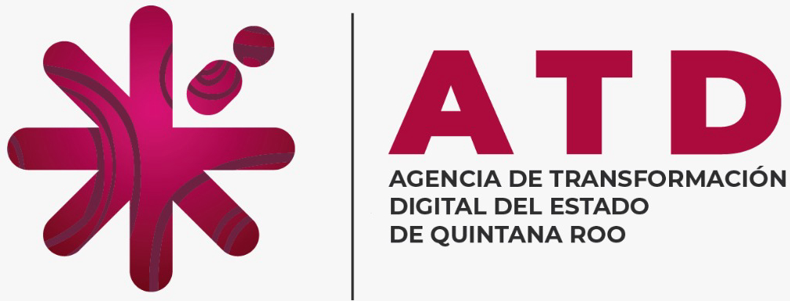
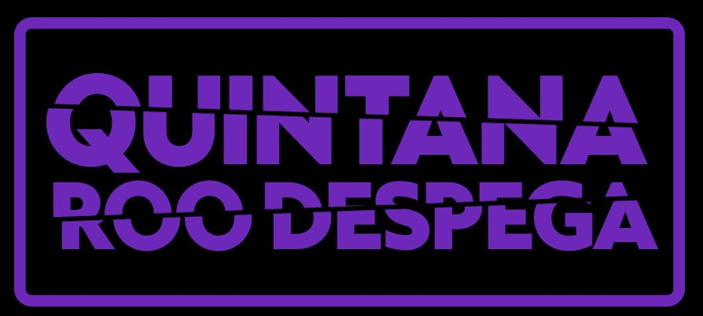
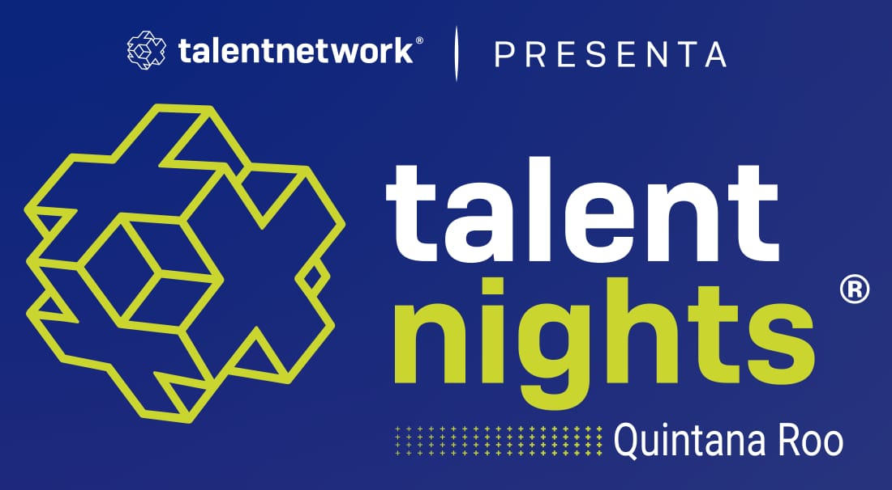

DataDay 2026
Conferencias · Talleres · Networking
Jueves 30 de abril
10:00 – 18:00 hrs
Auditorio Ingenierías

Conferencias · Talleres · Networking
Expertos de la industria y la academia compartiendo conocimiento de vanguardia en datos, IA y tecnología.
Aprende haciendo con sesiones prácticas guiadas por profesionales. Pon a prueba tus habilidades.
Conecta con profesionales, comunidades tech y compañeros apasionados por la tecnología.
Jueves 30 de abril, 2026 — Auditorio Ingenierías / Auditorio G
Apertura oficial a cargo de la Dra. Laura Margarita Hernández y el Mtro. Francisco Manzano.
📍 Auditorio G (Edificio de Ingenierías)Tiempo libre para descanso y networking.
📍 Área ComúnAgradecimientos y clausura del evento por la Dra. Laura Margarita Hernández y el Mtro. Francisco Manzano.
📍 Auditorio G (Edificio de Ingenierías)Conoce a los expertos que compartirán su conocimiento
Investigador y Experto en Redes Neuronales
"Visualización de datos multidimensionales con redes neuronales"
🕐 10:10 hrsLíder de Comunidad Tecno
"El impacto de las comunidades en el desarrollo"
🕐 16:00 hrsConoce de primera mano la experiencia, retos y aprendizajes de nuestros egresados al enfrentarse al mundo laboral.
Full Stack Developer · IMPLAN de Cancún
Egresada IDIOData Engineer & BI · Grupo Ultra
Egresado IDIOIngeniero en Datos · AVASA (Hertz)
Egresado IDIOEspecialista de Datos · Royalton Riviera Cancún
Egresada IDIOAprende haciendo — sesiones hands-on con expertos
Aplicaciones prácticas de la visualización de datos multidimensionales.
Inmersión en técnicas de manejo de datos con Candy Sansores.
Del dato a la decisión: aplicaciones reales del ML supervisado.
Explora proyectos innovadores creados por estudiantes de la Universidad del Caribe. Desde aplicaciones de inteligencia artificial hasta soluciones de análisis de datos, la feria es tu oportunidad de ver el talento en acción.

¿Tienes lo que se necesita? Pon a prueba tu cuerpo y tu código
El Departamento de Ciencias Básicas e Ingeniería, a través de Ingeniería en Datos e Inteligencia Organizacional, invita a estudiantes y docentes del área de ingeniería a participar en el rally temático: “The Data Race”, con el objetivo de fomentar la integración y el aprendizaje mediante retos físicos, lógica de datos y acertijos. No basta con ser rápido — ¡también necesitas pensar!
Forma tu equipo y regístrense juntos
Reconocimientos, trofeos y sorpresas
Recorre el campus resolviendo retos
Conecta con las comunidades tech de la región

La Agencia de Transformación Digital (ATD) de Quintana Roo es la autoridad estatal encargada de liderar la política pública de digitalización, innovación tecnológica y simplificación administrativa. Para la comunidad de Ingeniería en Datos, la ATD representa un ecosistema estratégico clave, ofreciendo oportunidades únicas para aplicar arquitecturas de datos y analítica orientadas a un gobierno moderno, transparente y centrado en la ciudadanía.

La ventana digital al crecimiento de Quintana Roo. Un ecosistema informativo dedicado a proyectar la actualidad, el turismo y los avances que definen el despegue de nuestra región ante el mundo.

El punto de encuentro nocturno donde la innovación cobra vida. Un espacio dinámico diseñado para conectar al talento local con líderes de la industria a través de ponencias fast-track. Aquí, los casos de éxito reales y las mejores prácticas se comparten en un formato ágil, vinculando a la academia con el sector empresarial para impulsar el ecosistema creativo y tecnológico.
_2026.png)
_2026.png)